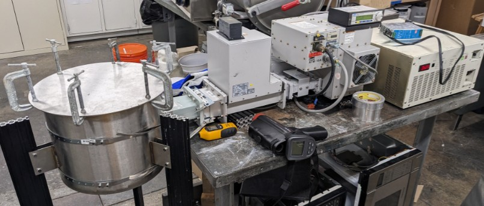

High Power Microwave Systems for Lunar Missions
At the Space Propulsion and Environments Laboratory, I researched high power microwave (HPM) systems for future long-term lunar missions. I developed a technical proposal for a lunar recycling system integrated within a centralized microwave network.
- Subsystem-level systems design for lunar recycling architecture
- Novel catalyst selections to increase methane generation from plastic waste
- Feasibility analysis for in-situ rocket propellant production on the Moon